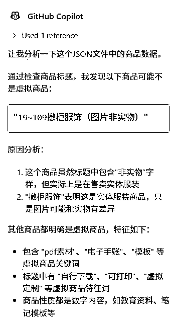
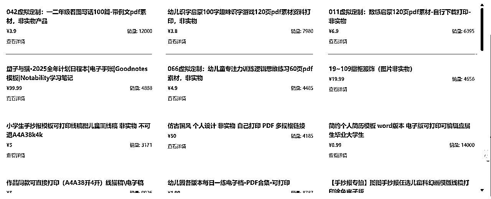

小红书虚拟商品数据分享
来源：https://fiazd3hbob.feishu.cn/docx/QoeGdG6XWoDYXBxIWt2cjLven4k
一、不知道用什么标题1
- 所有数据通过“基础关键词”搜索后的结果抓取，如果你有更多类似的关键词分享请留言
- 抓取商品数据时，按销量排序，只抓取销量大于3000的商品
- 销量大于3000可能会遗漏很多品，但只作为继续深挖的基础数据量应该也够了
- 还有一个原因就是影刀跑手机自动化效率很低，还得防止触发app的风控，要是能多台手机批量跑，再加上从跑出来的商品进入店铺进一步抓取的话，可以获得很多数据，价值不低。
- 数据只经过AI的初步筛洗（通过商品标题简单判断），所以可能会有重复项或者小部分非虚拟商品
- 其实可以根据商品标题和商品详情页里的预计发货时间结合起来让AI判断是否是虚拟品，毕竟大部分虚拟品发货速度都很快，但这一步我没有做，没有获取商品的预计发货时间
- 有AI的初步清洗，应该可以节省一些后续人工洗数据的成本

- 从近期的小红书中标风向标可以看到“趋势”，虚拟商品相关的很多，小红书也在扶持这一块
- 亦仁在某次回答圈友的提问时，提到了本来想写一个关于小红书虚拟商品的超级标
- 亦仁在传术师群里提到关于小红书虚拟商品相关数据的价值很大
- 小红书的虚拟产品航海进行中，可以给航海圈友们一点点参考方向~
- 我在参加web网站航海，索性把抓到的数据建个站，虽然数据量没那么大，但通过这些基础数据，可以深挖出不少相关店铺和关键词
二、数据获取思路
- 拿基础关键词到小红书商店里搜索，小红书商店目前没有网页版，所以只能用手机搜索
- 进入每个商品获取 商品标题、价格、销量、商品链接等数据
当然手动收集太耗费时间了，所以我用的影刀RPA，可以快速的实现自动化，剩下的事交给电脑就行了，影刀RPA实现手机自动化的关键点就是模拟人的操作，下边是一些可能的技术卡点：
- 定位想要点击的按钮时，通过影刀的“打印UI树”功能，可以很方便的使用xpath精准定位目标元素
- xpath不会写没关系，把UI树保存成xml扔给AI，让AI帮忙写xpath出来放到影刀里用就可以
- 如果xpath不好写，可以使用 影刀里的图像识别来实现元素定位点击，比如分享按钮获取商品链接
- 做好“休眠”，如果抓取太快太多，可能会触发app风控，通过适当的sleep来平衡效率和风险
- 小红书app还算好的，搞咸鱼数据的时候（当时网页版功能还不完善，很多数据只能app获取）差点整自闭了，经常发现跑了一晚上app又出幺蛾子了
- 有时候某个商品链接点进去可能会直接进入直播间，商品详情的获取没问题，只是在退出直播间的时候，和普通的退出商品详情页逻辑不太一样，因为退出直播间的时候可能会弹出让你关注的按钮，解决办法就是用影刀循环模拟按动手机返回键，直到界面上有“搜索”按钮才表明返回到了正确的地方
- 有时候滑动屏幕停止的位置，某个商品标题和搜索栏有一小部分重合，所以影刀点击的时候，本来想让它点击的是标题，进入商品详情页获取详细信息，但是会点到搜索框，很尴尬！
- 小红书app有个坑，滑动时会遇到一个很奇葩的问题，偶尔会遇到“滑动失效”，就是屏幕滑不动了，没有新数据出来，但是并不是没有数据了，直接上滑滑不动，需要下滑一下再上滑才会刷新新数据
影刀的代码截图感觉没啥太大用，把影刀官网的基础教程大概过一遍，实现这个应该没啥大问题，手机自动化主要的问题就是元素定位，只要整体思路清晰实现起来很快。有问题的话可以留言交流~
写好的影刀RPA成品，可以直接用：
https://api.winrobot360.com/redirect/robot/share?inviteKey=adbfcbb6d1699901
三、说了这么多，数据在哪里
我在参加web站的航海，所以顺手搞了个网站弄了个域名可以直接访问：https://old.xhs-virtual-goods.site/

- 网站使用纯前端实现，托管在cloudflare pages
- 开发工具没有用cursor，使用的copilot，里边也有claude 3.5模型
- 对于相对简单的需求，不必要非得使用claude 3.7之类的
- 评估需求复杂度，选择合适的工具或者模型，毕竟cursor只有500次快速请求
- Deepseek v3发布了，据说代码能力介于claude 3.5-3.7之间，我还没测，roo code插件加上openrouter里有免费的可以测试
- "使用纯前端html+tailwind css+js实现json文件里的数据展示，json文件里数据可能很多，使用虚拟滚动技术加载页面"，就是这么简单😂，但是实际上虚拟滚动技术并没有完整实现，暂时不改了！
- AI自动做了响应式设计👍，手机端PC端访问效果都不错
{
"keyword": "all",
"goods": [
{
"商品标题": "xxx",
"销量": 12000,
"价格": "3.9",
"商品链接": "https://www.xiaohongshu.com/goods-detail/xxx"
},
{
"商品标题": "yyy",
"销量": 7980,
"价格": "3.8",
"商品链接": "https://www.xiaohongshu.com/goods-detail/yyy"
}
]
}
- Tips: 网站页面上有一个按钮“查看详情”，点击之后可以直接跳转到小红书的商品详情页，但如果直接跳转的话，会有一个referer的http header，这个header值是自己的网站url（我的是这个https://old.xhs-virtual-goods.site/），这样小红书的监测系统有可能会发现有很多商品访问是从这么一个奇怪的网站来的，所以可以通过代码去掉这个header，直接跟ai说点击“查看详情”按钮跳转的时候不要referer header就可以
- 网站里的数据可以直接浏览，也可以导出到本地CSV文件
四、不知道用什么标题2
- wps会员、剪映会员、百度网盘会员等等，都是几千几万的销量
- 50欧1【3.25第2车6.9】保底电子版壁纸 无物流发货中奖概率2%
- https://www.xiaohongshu.com/goods-detail/67b33cdf97592600019ebed8
- 这个品有意思，感觉像是在玩儿抽奖，8.9的单价，卖了6700+单